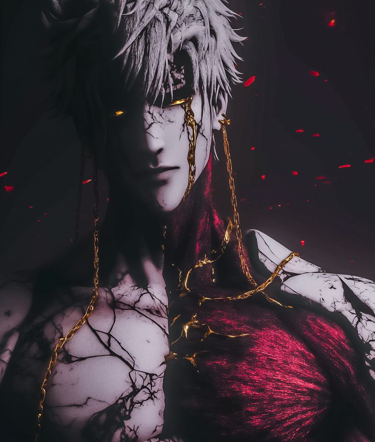

Corte do Véu
Harquie concentra a energia corrompida em sua espada e desfere um poderoso golpe.
REI AMALDIÇOADO • ELDRATH
“Para salvar meu reino, condenei-o. Agora carrego suas ruínas.”
Conhecer o Rei
Harquie foi o último rei de Eldrath, um reino que durante séculos prosperou graças a uma antiga fonte de energia conhecida como Véu.
Durante uma grande guerra, Harquie decidiu quebrar o selo que mantinha esse poder aprisionado. A energia libertada destruiu seus inimigos, mas também consumiu seu próprio reino.
Harquie sobreviveu à destruição, porém foi corrompido pela energia do Véu. Agora ele vaga pelas ruínas tentando reconstruir aquilo que um dia jurou proteger.
Ler maisHarquie concentra a energia corrompida em sua espada e desfere um poderoso golpe.
Permite que Harquie se mova rapidamente assumindo temporariamente uma forma espectral.
Invoca espíritos dos antigos guerreiros de Eldrath para lutar ao seu lado.
Quanto mais ferido Harquie fica, maior se torna o poder de sua espada.
Forjada para os antigos reis de Eldrath, a espada absorveu parte da energia liberada durante a queda do reino.
Desde então, sua lâmina permanece ligada à existência de Harquie.
Último símbolo da antiga família real de Eldrath.
Correntes utilizadas nos antigos rituais realizados pelos reis.
Um pequeno fragmento da energia responsável pela destruição de Eldrath.
Deseja entrar em contato com o Reino de Eldrath?